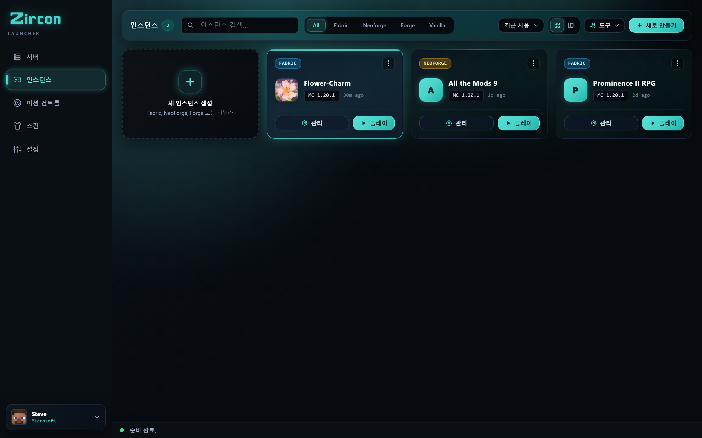
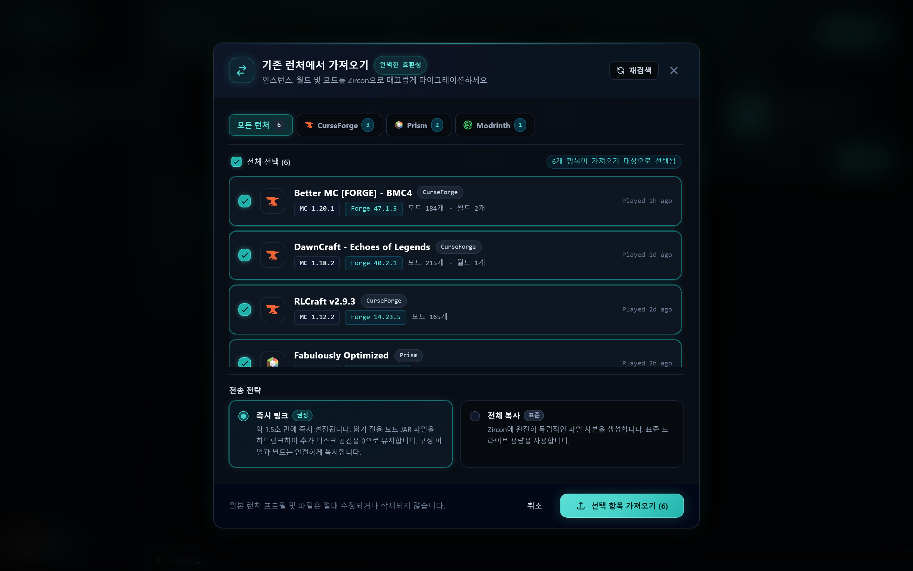
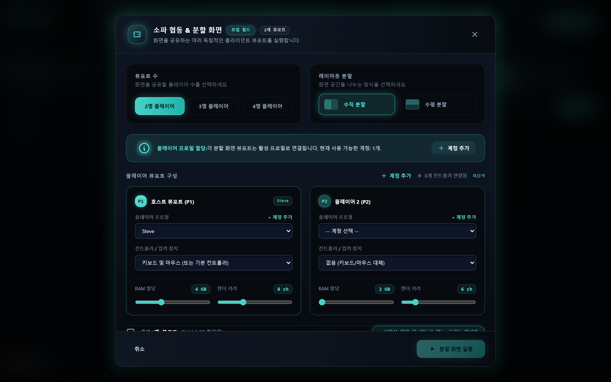
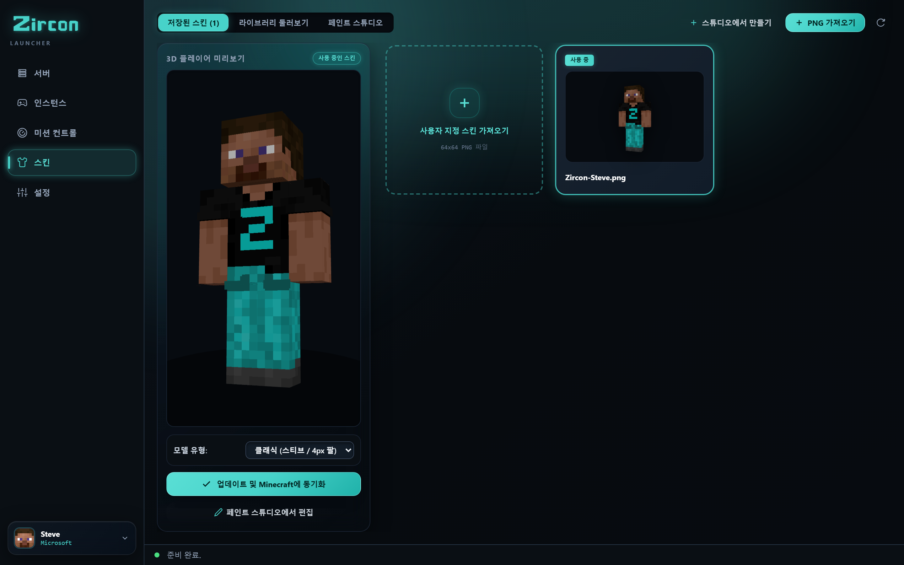

Zircon은 모드팩 불일치 문제를 영구적으로 해결합니다. 서버를 선택하고, PLAY 버튼을 누르면 모든 모드가 수 초 만에 설치되고 암호화 검증됩니다. 또한: CurseForge 및 Prism에서 원클릭 가져오기, 4인 소파 협동 플레이, LAN 자동 발견 기능을 제공합니다.





위의 탭을 클릭하거나 이미지를 클릭하여 전체 화면 세부 정보를 확인하세요.
게임 밤 전에 2시간 동안 이어지는 Discord 논쟁을 끝내세요. PLAY 버튼만 누르고 바로 입장하세요.
서버는 포트 25565를 통해 정확한 자재 목록(BOM)을 브로드캐스트합니다 — 모드 ID, 버전 해시, 로더, 설정 등.
런처는 밀리초 단위로 로컬 인스턴스를 스캔하여 이미 보유한 파일은 건너뛰고 누락된 파일만 표시합니다.
누락된 파일은 Modrinth 및 CurseForge CDN에서 병렬로 직접 다운로드됩니다. 손상된 JAR 파일이나 버전 불일치가 없습니다.

월드, 키 바인딩, 모드팩 인스턴스를 포기하지 마세요. Zircon은 설치된 런처를 자동으로 감지하고 2초 이내에 손실 없이 마이그레이션합니다.
모드팩, 오버라이드, 사용자 지정 설정 및 월드 저장을 자동으로 감지합니다.
인스턴스 트리, JVM 인수 및 월드 저장을 가져옵니다.
MR 팩, 인덱스 파일 및 사용자 지정 리소스 팩을 보존합니다.
인스턴스, 사용자 지정 백업 및 텍스처 팩 폴더를 전송합니다.
Zircon을 실행하면 네이티브 Rust 디텍터가 시스템에 설치된 프로필을 찾습니다. 가져올 인스턴스를 선택하면 Zircon이 모든 것을 깔끔하고 격리된 샌드박스로 마이그레이션합니다.
다른 런처에서 항상 원했던 모든 기능 — 데스크톱 앱에 기본 탑재되었습니다.
사용자 지정 강조 색상, 어두운 팔레트 및 구성 가능한 보기 스타일로 런처를 개인 취향에 맞게 조정하세요.
활성 인터넷 연결 없이 어디서나 플레이하세요. 기존 싱글플레이 월드를 가져오고, 사용자 지정 RAM을 할당하며, 모드팩을 격리하세요.
동기화를 손상시키지 않고 모든 서버 인스턴스에 자체 옵션 클라이언트 모드, 셰이더, 리소스 팩 및 키 바인딩을 추가하세요.
Zircon 뒤의 셀프 호스팅 관리 엔진입니다. Docker 번거로움이 없고, 다중 포트 방화벽 악몽이 없습니다. 기술 지원 없이 플레이어가 실제로 연결할 수 있는 모드 서버를 실행하세요.
친구가 실행 중인 것과 일치하기를 바라면서 '올바른 빌드'를 찾아 모드 사이트를 스크롤하기.
mods/에 모드 파일을 수동으로 떨어뜨리고 실행 시 충돌하는 파일을 삭제하기.
서버가 비어 있는 상태에서 새벽 1시에 친구와 설정을 비교하며 하나씩 불일치를 해결하기.
친구들과 모드 적용된 Minecraft를 플레이하고 싶은 사람들을 위해 만들어졌습니다 — 저녁 시간을 모드 버전과 충돌 로그를 조율하는 데 쓰지 않도록.
PLAY를 누르면 Zircon이 올바른 Minecraft 버전과 모드 로더(Fabric, Quilt, Forge 또는 NeoForge)를 다운로드하고, 모드를 설치하며, 곧바로 게임으로 데려다줍니다.
Modrinth와 CurseForge에서 모드를 검색하고 다운로드하며, 모든 실행 시 SHA-512 및 지문 검사로 검증합니다. 누락되거나 오래된 것이 없습니다.
공식 Microsoft 로그인 — 비밀번호는 Microsoft로만 전달되며 Zircon에는 절대 전달되지 않습니다. 공용 로그인, 크랙 런처, 오프라인 우회 없음.
라이브 3D 미리보기, 공식 Mojang 클라우드 동기화 및 API를 통해 인기 스킨을 가져오는 앱 내 커뮤니티 스킨 탐색기가 포함된 저장된 스킨 선택기.
서버는 자체 셰이더와 리소스 팩을 제공할 수 있습니다. Zircon은 참여 시 이를 적용합니다 — 한 번만 수락하면 됩니다.
자체 모드, 셰이더 및 텍스처 팩이 포함된 오프라인 싱글플레이 인스턴스를 생성하세요. 서버가 필요 없습니다 — 조용히 건축하세요.
브라우저에서 원클릭. Zircon은 공식 Microsoft 플로우를 사용합니다 — 비밀번호는 앱에 절대 닿지 않습니다.
저장된 서버, 최근 플레이 순 — 추천 포함. 각 서버는 자체 모드 목록을 가져옵니다.
Zircon이 Modrinth & CurseForge에서 모드를 동기화하고 검증하며, 서버가 잠들어 있으면 깨우고 연결합니다. 당신은 완전히 모드가 적용된 상태로 스폰됩니다.
플레이 중에 기가바이트의 백그라운드 메모리를 잡아먹는 느린 Electron 런타임이 없습니다. Zircon의 핵심 데스크톱 엔진은 즉각적인 시작, 서브 밀리초 해시 검증 및 초경량 시스템 풋프린트를 위해 완전히 컴파일된 Rust로 작성되었습니다.
Zircon 시작에 대해 알아야 할 모든 것.
서버에 참여하고 PLAY를 누르면, Zircon은 서버의 공개된 자재 목록(BOM) 매니페스트를 로컬 클라이언트 폴더와 비교합니다. 누락되거나 업데이트된 모드는 Modrinth & CurseForge SHA-512 해시 및 지문으로 검증된 후, 수동 파일 드래그 없이 병렬로 즉시 다운로드됩니다.
예! Zircon에는 네이티브 원클릭 범용 마이그레이션 도구가 포함되어 있습니다. CurseForge, Prism Launcher, Modrinth App 및 ATLauncher에서 설치된 디렉터리를 자동으로 감지하여 완전한 인스턴스 트리, 저장 데이터, 키 바인딩 및 모드 구성을 2초 이내에 가져올 수 있습니다.
Zircon은 최대 4개의 게임패드(Xbox, PlayStation 또는 일반 Bluetooth 컨트롤러)를 연결하고 모니터나 TV에서 매끄러운 분할 화면 그리드로 배열된 여러 개의 격리된 게임 창을 실행할 수 있게 해줍니다. 각 플레이어는 자신의 게임패드로 자신의 캐릭터를 제어합니다.
예! Zircon은 API 키 구성 없이 Modrinth와 CurseForge에서 모드를 직접 검색, 설치 및 동기화하는 것을 네이티브로 지원합니다. 두 저장소 모두 박스 오픈 상태로 완전히 통합되어 있습니다.
예, Zircon은 Business Source License 1.1 (BSL 1.1) 하에 소스 이용 가능합니다. 클라이언트 런처와 셀프 호스팅 서버 관리자 모두 플레이어, 홈랩 사용자 및 게이밍 네트워크를 위해 100% 무료입니다. 전체 코드베이스는 GitHub에서 공개 검사, 셀프 호스팅 및 커뮤니티 기여를 위해 열려 있습니다.
예. 인증은 기본 시스템 브라우저에서 표준 Microsoft OAuth 2.0 PKCE를 통해 수행됩니다. 로그인 자격 증명은 직접 Microsoft 로그인 서버로 전달되며 Zircon에 의해 절대 접근, 처리 또는 저장되지 않습니다.
Zircon은 Fabric, Quilt, Forge 및 NeoForge를 네이티브로 지원합니다. 런처는 인스턴스를 실행하거나 서버에 참여할 때 필요한 모드 로더 버전과 검증된 Adoptium Temurin Java 런타임을 자동으로 설치합니다.